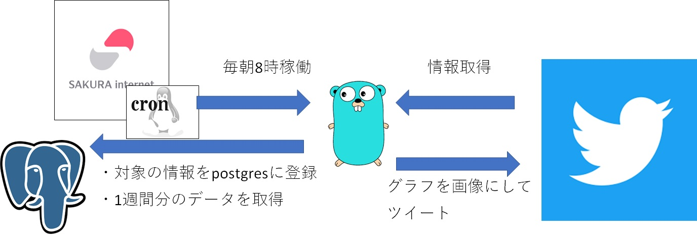

公式アカウントのフォロワー数変化(Goで書いた)
Tweetホーム > 個人開発したことまとめ > 公式アカウントのフォロワー数変化(Goで書いた)
公式アカウントのフォロワー数変化(Goで書いた)
ゲームの公式twitterアカウントのフォロワー数に応じてプレゼントが貰えるというキャンペーンをやっていたので、毎日カウントしてbotで報知してた。
作ったもの（実際に稼働したときのツイート）
毎朝フォロワー数を通知してくれるbot
今2021-12-07 08:00
— sagamax@サガとレトロゲー (@sagamax__) December 6, 2021
ロマサガ公式垢のフォロワー数をカウントするbotです。
現在の @romasaga_rs のフォロワー数は225,178人。
あと24,822人でSSポール！
21,22,23,24万で海外版の着せ替え衣装も貰えます！@romasaga_rs のフォローお願いします！#ロマサガRS#新ロマサガRS#公式フォロワー数 pic.twitter.com/976eRmJ8pt
どんな仕組み？

Go ソースコード(bot)
ソースコード(Go)
主処理。31行目の TweetPublicAccount() が入口
ぶつかった壁とか学んだこととか
エラーで詰まったとかはあんまりないんだけど、これまで python で書いてた twitter bot の Go 版ができた。Go はコンテナと相性がいいんだなという学びはあるんだけど、それに気づくのはまだ先の話。。。
①tweet するためのライブラリ
anaconda というライブラリを使ってツイートするプログラム。
TweetPublicAccount 関数の中でツイート用のインスタンス生成し、変数 api に格納（36行目）。70行目でツイート実行。
画像をツイートしたい場合は54～58行目。ツイート実行の前に api.UploadMedia で画像を upload する必要がある。引数の型が base64String なので画像を base64エンコードしている。
そのあと、 url.Values{} の "media_ids" に格納。複数ある場合はカンマ区切りで設定。
参考
- ChimeraCoder/anaconda
- 【Go言語/Twitter】anacondaを利用して画像付きツイートをするプログラム
- 【Go言語/Twitter】引数の文字列をツイートするプログラム
- Go言語でTwitterAPIを利用する(anacondaの利用)
- 【Go】TwitterAppでツイートするプログラムを作った
- #golang 画像ファイルをbase64 encode/decode するには
②グラフ生成するためのライブラリ
plot というライブラリを使って画像生成。
上記ソースの82行目 createGraph() 関数の中。90行目で呼び出している getData() 関数で2週間分のデータを取得。
93行～113行目の処理で縦軸・横軸の設定、115～120行目でグラフの見栄えを調整。
124～133行目でグラフを生成。
参考
③postgres DB接続のためのライブラリ
pq というライブラリを使って postgres DB 接続。ライブラリは import するだけで、コード上使用するのは database/sql という標準ライブラリ。
専用のパッケージを import （16行目の _ "github.com/lib/pq" ）して connection 生成(42行目)してあげればあとはSQL文字列を実行するだけ。
上記42行目の呼び出し先 ※DBとのコネクション生成（抜粋）
136行目の getData() 関数、141行目の insData() 関数がSQL実行部分の実装例。
参考